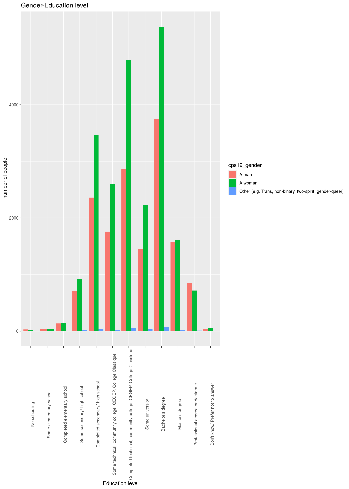

I.Introduction
We explore the education level of Canadians based on gender groups. This allows some degree of understanding of election issues and party preferences. We find that the Canadian literacy rate is high, with a higher proportion of survey respondents being educated women while the LGBTQ+ comprises a very small proportion.
A bar plot is constructed that shows the level of education completed by Canadians who have undertaken the survey. Moreover, the plot divides the respondents into the respective gender groups they identify themselves as.
The paper outlines the fact that gender representation and the education level provide the ability for the population to understand issues pertaining to the election and a small representation of a certain group can bias results in a way that parties with policies in their interests, are not supported enough. The weakness here would be that everyone taking that survey may not intend to vote or may not be have enough awareness regarding issues in which case results can vary due to random voting. For the future, we intend to make a graph that shows the proportion of each gender group intending to actually vote in the election and their awareness regarding issues.
knitr::opts_chunk$set(echo = FALSE)
setwd("/cloud/project")
install.packages("devtools")## Installing package into '/home/rstudio-user/R/x86_64-pc-linux-gnu-library/4.0'
## (as 'lib' is unspecified)devtools::install_github("hodgettsp/cesR")## Skipping install of 'cesR' from a github remote, the SHA1 (7c780beb) has not changed since last install.
## Use `force = TRUE` to force installationcesR::get_cescodes()## index ces_survey_code get_ces_call_char
## 1 1 ces2019_web "ces2019_web"
## 2 2 ces2019_phone "ces2019_phone"
## 3 3 ces2015_web "ces2015_web"
## 4 4 ces2015_phone "ces2015_phone"
## 5 5 ces2015_combo "ces2015_combo"
## 6 6 ces2011 "ces2011"
## 7 7 ces2008 "ces2008"
## 8 8 ces2004 "ces2004"
## 9 9 ces0411 "ces0411"
## 10 10 ces0406 "ces0406"
## 11 11 ces2000 "ces2000"
## 12 12 ces1997 "ces1997"
## 13 13 ces1993 "ces1993"
## 14 14 ces1988 "ces1988"
## 15 15 ces1984 "ces1984"
## 16 16 ces1974 "ces1974"
## 17 17 ces7480 "ces7480"
## 18 18 ces72_jnjl "ces72_jnjl"
## 19 19 ces72_sep "ces72_sep"
## 20 20 ces72_nov "ces72_nov"
## 21 21 ces1968 "ces1968"
## 22 22 ces1965 "ces1965"library("cesR")
install.packages("tidyverse")## Installing package into '/home/rstudio-user/R/x86_64-pc-linux-gnu-library/4.0'
## (as 'lib' is unspecified)install.packages("readr")## Installing package into '/home/rstudio-user/R/x86_64-pc-linux-gnu-library/4.0'
## (as 'lib' is unspecified)install.packages("skimr")## Installing package into '/home/rstudio-user/R/x86_64-pc-linux-gnu-library/4.0'
## (as 'lib' is unspecified)library(tidyverse)## ── Attaching packages ──────────────────────── tidyverse 1.3.0 ──## ✓ ggplot2 3.3.2 ✓ purrr 0.3.4
## ✓ tibble 3.0.3 ✓ dplyr 1.0.2
## ✓ tidyr 1.1.2 ✓ stringr 1.4.0
## ✓ readr 1.3.1 ✓ forcats 0.5.0## ── Conflicts ─────────────────────────── tidyverse_conflicts() ──
## x dplyr::filter() masks stats::filter()
## x dplyr::lag() masks stats::lag()library(readr)
library(skimr)
install.packages("labelled")## Installing package into '/home/rstudio-user/R/x86_64-pc-linux-gnu-library/4.0'
## (as 'lib' is unspecified)library(labelled)
get_ces("ces2019_web")## TO CITE THIS SURVEY FILE:
##
## - Stephenson, Laura B; Harell, Allison; Rubenson, Daniel; Loewen, Peter John, 2020, '2019 Canadian Election Study - Online Survey', https://doi.org/10.7910/DVN/DUS88V, Harvard Dataverse, V1
##
## - Stephenson, Laura, Allison Harrel, Daniel Rubenson and Peter Loewen. Forthcoming. 'Measuring Preferences and Behaviour in the 2019 Canadian Election Study,' Canadian Journal of Political Science.
##
## LINK: https://dataverse.harvard.edu/dataset.xhtml?persistentId=doi:10.7910/DVN/DUS88Vces2019_web <- to_factor(ces2019_web)
head(ces2019_web)## # A tibble: 6 x 620
## cps19_StartDate cps19_EndDate cps19_ResponseId cps19_consent
## <dttm> <dttm> <chr> <fct>
## 1 2019-09-13 08:09:44 2019-09-13 08:36:19 R_1OpYXEFGzHRUp… I consent to…
## 2 2019-09-13 08:39:09 2019-09-13 08:57:06 R_2qdrL3J618rxY… I consent to…
## 3 2019-09-13 10:01:19 2019-09-13 10:27:29 R_USWDAPcQEQiMm… I consent to…
## 4 2019-09-13 10:05:37 2019-09-13 10:50:53 R_3IQaeDXy0tBzE… I consent to…
## 5 2019-09-13 10:05:52 2019-09-13 10:32:53 R_27WeMQ1asip2c… I consent to…
## 6 2019-09-13 10:10:20 2019-09-13 10:29:45 R_3LiGZcCWJEcWV… I consent to…
## # … with 616 more variables: cps19_citizenship <fct>, cps19_yob <fct>,
## # cps19_yob_2001_age <fct>, cps19_gender <fct>, cps19_province <fct>,
## # cps19_education <fct>, cps19_demsat <fct>, cps19_imp_iss <chr>,
## # cps19_imp_iss_party <fct>, cps19_imp_iss_party_7_TEXT <chr>,
## # cps19_imp_loc_iss <chr>, cps19_imp_loc_iss_p <fct>,
## # cps19_imp_loc_iss_p_7_TEXT <chr>, cps19_interest_gen_1 <dbl>,
## # cps19_interest_elxn_1 <dbl>, cps19_v_likely <fct>, cps19_v_likely_pr <fct>,
## # cps19_votechoice <fct>, cps19_votechoice_7_TEXT <chr>,
## # cps19_votechoice_pr <fct>, cps19_votechoice_pr_7_TEXT <chr>,
## # cps19_vote_unlikely <fct>, cps19_vote_unlikely_7_TEXT <chr>,
## # cps19_vote_unlike_pr <fct>, cps19_vote_unlike_pr_7_TEXT <chr>,
## # cps19_v_advance <fct>, cps19_v_advance_7_TEXT <chr>, cps19_vote_lean <fct>,
## # cps19_vote_lean_7_TEXT <chr>, cps19_vote_lean_pr <fct>,
## # cps19_vote_lean_pr_7_TEXT <chr>, cps19_2nd_choice <fct>,
## # cps19_2nd_choice_7_TEXT <chr>, cps19_2nd_choice_pr <fct>,
## # cps19_2nd_choice_pr_7_TEXT <chr>, cps19_not_vote_for_1 <fct>,
## # cps19_not_vote_for_2 <fct>, cps19_not_vote_for_3 <fct>,
## # cps19_not_vote_for_4 <fct>, cps19_not_vote_for_5 <fct>,
## # cps19_not_vote_for_6 <fct>, cps19_not_vote_for_7 <fct>,
## # cps19_not_vote_for_8 <fct>, cps19_not_vote_for_9 <fct>,
## # cps19_not_vote_for_7_TEXT <chr>, cps19_fed_gov_sat <fct>,
## # cps19_party_rating_23 <dbl>, cps19_party_rating_24 <dbl>,
## # cps19_party_rating_25 <dbl>, cps19_party_rating_26 <dbl>,
## # cps19_party_rating_27 <dbl>, cps19_party_rating_28 <dbl>,
## # cps19_lead_rating_23 <dbl>, cps19_lead_rating_24 <dbl>,
## # cps19_lead_rating_25 <dbl>, cps19_lead_rating_26 <dbl>,
## # cps19_lead_rating_27 <dbl>, cps19_lead_rating_28 <dbl>,
## # cps19_cand_rating_23 <dbl>, cps19_cand_rating_24 <dbl>,
## # cps19_cand_rating_25 <dbl>, cps19_cand_rating_26 <dbl>,
## # cps19_cand_rating_27 <dbl>, cps19_cand_rating_28 <dbl>,
## # cps19_lr_scale_bef_1 <dbl>, cps19_lr_parties_1 <dbl>,
## # cps19_lr_parties_2 <dbl>, cps19_lr_parties_3 <dbl>,
## # cps19_lr_parties_4 <dbl>, cps19_lr_parties_5 <dbl>,
## # cps19_lr_parties_6 <dbl>, cps19_lr_scale_aft_1 <dbl>,
## # cps19_lead_int_113 <fct>, cps19_lead_int_114 <fct>,
## # cps19_lead_int_115 <fct>, cps19_lead_int_116 <fct>,
## # cps19_lead_int_117 <fct>, cps19_lead_int_118 <fct>,
## # cps19_lead_int_119 <fct>, cps19_lead_int_120 <fct>,
## # cps19_lead_strong_113 <fct>, cps19_lead_strong_114 <fct>,
## # cps19_lead_strong_115 <fct>, cps19_lead_strong_116 <fct>,
## # cps19_lead_strong_117 <fct>, cps19_lead_strong_118 <fct>,
## # cps19_lead_strong_119 <fct>, cps19_lead_strong_120 <fct>,
## # cps19_lead_trust_113 <fct>, cps19_lead_trust_114 <fct>,
## # cps19_lead_trust_115 <fct>, cps19_lead_trust_116 <fct>,
## # cps19_lead_trust_117 <fct>, cps19_lead_trust_118 <fct>,
## # cps19_lead_trust_119 <fct>, cps19_lead_trust_120 <fct>,
## # cps19_lead_cares_113 <fct>, cps19_lead_cares_114 <fct>,
## # cps19_lead_cares_115 <fct>, cps19_lead_cares_116 <fct>, …skimr::skim("ces2019_web")| Name | “ces2019_web” |
| Number of rows | 1 |
| Number of columns | 1 |
| _______________________ | |
| Column type frequency: | |
| character | 1 |
| ________________________ | |
| Group variables | None |
Variable type: character
| skim_variable | n_missing | complete_rate | min | max | empty | n_unique | whitespace |
|---|---|---|---|---|---|---|---|
| data | 0 | 1 | 11 | 11 | 0 | 1 | 0 |
II.Data
The data set used in this report is the “ces2019_web” data set. It his survey data from the 2019 Canadian Election Study downloaded via that cesR package in R.
The data set was cleaned and contained answers to survey questions that were mostly close-ended, nominal questions asking people whether they are Canadian citizens, their gender,etc. There are some open-ended questions such as what the respondent thinks is the most important issue in the federal election. There are also some likert and rating scale questions, that ask respondents their degree of satisfaction and a numeric measure of it through a sliding scale.
The answers in the data set have been converted to factors or categorical answers in order to make it easier to produce a graph.
III.Graph
 ## IV.Discussion
The graph produced is a bar plot using ggplot from the “tidyverse” package in R. In this bar plot, we categorize the respondents in terms of gender and the level of education they have completed. The highest number of respondents are women who have completed a bachelor’s degree.
There are two things to be observed here. Firstly, there is a very small percentage of respondents who have never been to a school or prefer not to answer. This implies that a high literacy rate in Canada encourages the ability to understand, and be more aware about issues, therefore, shaping voting decisions that would be beneficial for the country.
In almost all the different levels of education, women dominate, indicating that a higher proportion of educated women are taking part in the survey and the election, compared to men, and other gender identities. However, there is an extremely small proportion of the LGBTQ+ community represented in the graph. This suggests that either the community is not represented enough in the survey, and the elections or the community represents a very small proportion of the population. Moreover, the proportion of the LGBTQ+ community taking the survey seem to have received some degree of education, implying a fairly high literacy within the community.
These findings have the certain implications towards the voting and policy preferences of the population. Since most of the sample seems to have some degree of education, it can be safe to assume that they would be able to, somewhat, understand some issues pertaining to the country in which case voting will not be random, in majority. Most importantly, their preference would lean towards parties resolving some of aforementioned issues or those, with policies that provide personal benefit to them, their families, etc. With such a small representation of the LGBTQ+ community, there may arise the situation where the results declare the winning party as one that does not necessarily have any policies benefiting the community, compared to some other party that may actually have policies favoring the LGBTQ+ community. In other words, the election results may be biased towards the preferences of a specific gender group, in this case, mostly women as they seem to be the largest proportion to have taken the survey.
V.Weaknesses and Next Steps.
There is a very obvious weakness here which is that everyone who responded to the survey may not end up voting. In that case, we would have to compare how many people from each gender group intend to vote in the elections.
It is also fair to assume that other genders can look out for the interests of the LGBTQ+ community and the results may not be as biased. Moreover, a higher level of education may not always indicate awareness of issues. To check this, we would have to make a graph categorizing the gender groups on their awareness of issues.
VI.References
Stephenson, Laura B; Harell, Allison; Rubenson, Daniel; Loewen, Peter John, 2020, ‘2019 Canadian Election Study - Online Survey’, https://doi.org/10.7910/DVN/DUS88V, Harvard Dataverse, V1
Stephenson, Laura, Allison Harrel, Daniel Rubenson and Peter Loewen. Forthcoming. ‘Measuring Preferences and Behaviour in the 2019 Canadian Election Study,’ Canadian Journal of Political Science.
Paul A. Hodgetts and Rohan Alexander (2020). cesR: Access the CES Datasets a Little Easier.. R package version 0.1.0.
-Hadley Wickham, Jim Hester and Winston Chang (2020). devtools: Tools to Make Developing R Packages Easier. https://devtools.r-lib.org/,https://github.com/r-lib/devtools.
Wickham et al., (2019). Welcome to the tidyverse. Journal of Open Source Software, 4(43), 1686, https://doi.org/10.21105/joss.01686
R Core Team (2020). R: A language and environment for statistical computing. R Foundation for Statistical Computing, Vienna, Austria. URL https://www.R-project.org/.
-JJ Allaire and Yihui Xie and Jonathan McPherson and Javier Luraschi and Kevin Ushey and Aron Atkins and Hadley Wickham and Joe Cheng and Winston Chang and Richard Iannone (2020). rmarkdown: Dynamic Documents for R. R package version 2.3. URL https://rmarkdown.rstudio.com.
Yihui Xie and J.J. Allaire and Garrett Grolemund (2018). R Markdown: The Definitive Guide. Chapman and Hall/CRC. ISBN 9781138359338. URL https://bookdown.org/yihui/rmarkdown.
Hadley Wickham, Jim Hester and Romain Francois (2018). readr: Read Rectangular Text Data. http://readr.tidyverse.org,https://github.com/tidyverse/readr
Elin Waring, Michael Quinn, Amelia McNamara, Eduardo Arino de la Rubia, Hao Zhu and Shannon Ellis (2020). skimr: Compact and Flexible Summaries of Data. https://docs.ropensci.org/skimr (website), https://github.com/ropensci/skimr.
Joseph Larmarange (2020). labelled: Manipulating Labelled Data. R package version 2.7.0. http://larmarange.github.io/labelled/
-Yihui Xie (2020). blogdown: Create Blogs and Websites with R Markdown. R package version 0.20.
Yihui Xie, Alison Presmanes Hill, and Amber Thomas (2017). blogdown: Creating Websites with R Markdown. Chapman and Hall/CRC. ISBN 978-0815363729